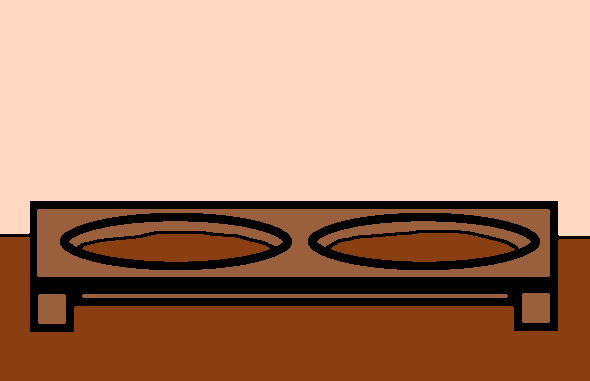
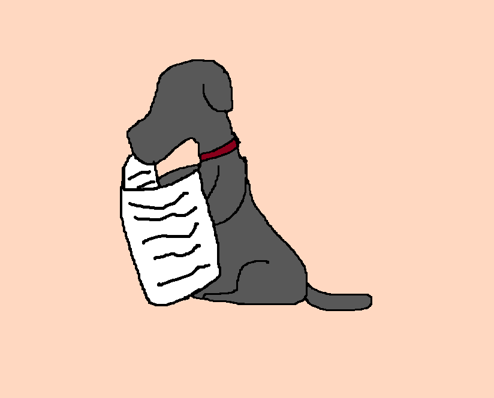
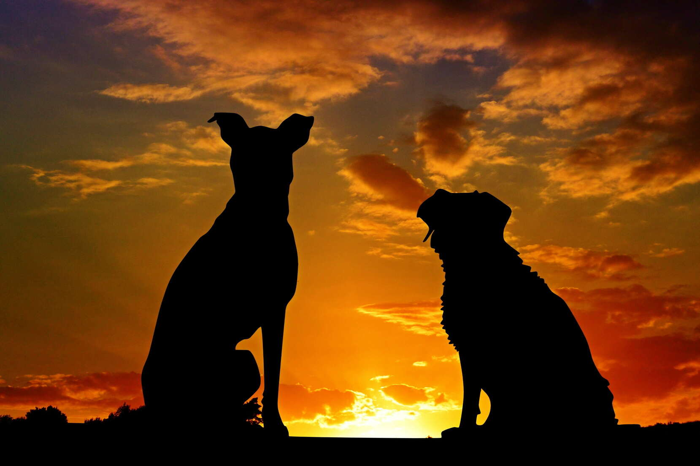

Areas of Training



Overview
Teaching our new friend
Welcome to the training station, here we'll teach about the beat practices when training your dog, the best ages and techniques. While
No more begging or tummy troubles
Dogs have general dietary needs and they cant just eat anything, no matter how much they beg. Here are some techniques on ending the dinner time puppy dog eyes and turning basic kebele into supplementary food. For starters when training your dog always be consistent, never allow begging even once, make sure everyone knows this it'll be nearly impossible to train your puppy / dog without everyone being on board. Do not punish your animals for unwanted behavior it create confusion rather than discipline, just reward the actions that are correct. Lastly there's nothing better than a wait command simply bring your dog its food but wait until its settled and or sitting to give it to them.
House training
Accidents happen lets turn them into lessons, and while furniture and cabinets may seem tasty they aren't. For bathroom training you should establish a schedule, taking dog outside to pee as you get up in the morning puppies will need to go out more than adults. Within half an hour of eating / drinking food and after moderate naps. Accidence may still happen, if they do don't punish them, yelling and nose pressing may cause fear and confusion.
Other tail wagers
Dogs are very aware especially around other dogs, its important to socialize and train your dog to be friendly around others. For starters listen for your dogs reactions never force them into an interaction this will make them feel cornered and they may get aggressive. Puppies are like sponges absorbing all the experiences around them while older dogs are a lot slower and require gradual change. For pet playdates make sure the other dog is also clean and well behaved, be there for them and show them reassurance a calm pat on the head will do.